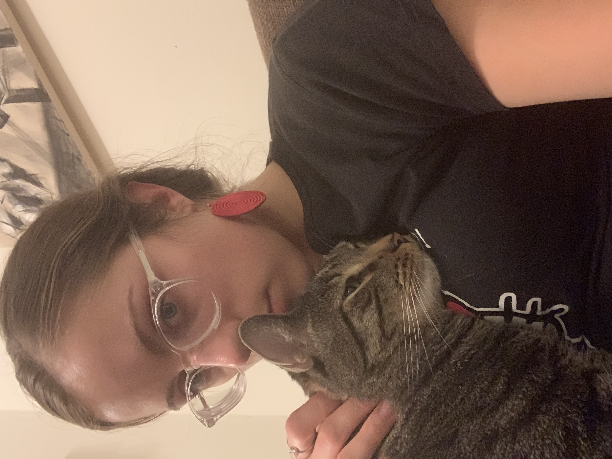

Bio
Tomas is 5 years old and a real a-hole. Tomas was found in a dumpster and is still a true garbage cat. He is fully devoted to his mom; everyone else is his enemy.
Likes
- eating
- Mom
- lasers
- hunting
Disikes
- Sweetie Boy
- Bella
- The sound of metal hitting metal (brings back dumpster trauma)
- when Mom leaves his field of vision